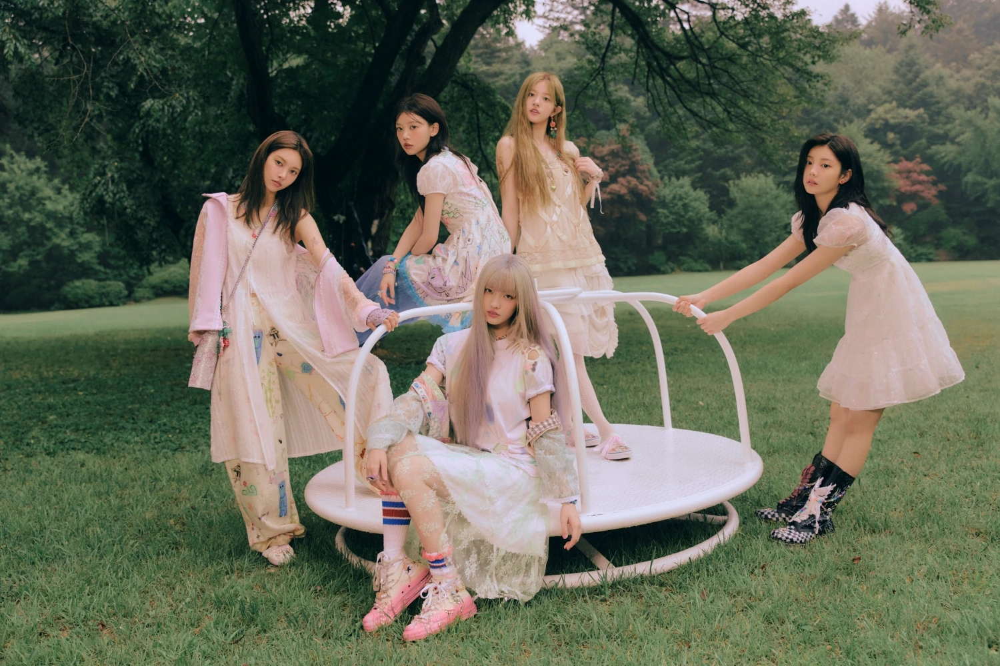

A SMALL HELLO
HELLO,
GLLIT.
很久没追星？
就从这一次喜欢开始。
不用先补完所有舞台，也不用一下记住所有术语。
这里陪你认识五位成员，找到官方信息，
一点点建立属于自己的追星日常。
没有追赶的任务。每一步，都由你确认。
看看你的五关旅程YOUR WAY IN / 01—05
从这里，开始靠近。
00/ 05已确认关卡 · 当前第一关
每完成一关，由你点击「该部分已确认」，再开启下一段旅程。学习记录保存在当前浏览器。
JUST FOR FUN / 随便逛逛
不交作业，也能靠近。
FIVE NAMES, ONE ILLIT
先记住，她们的名字。
成员照片来自日本官网档案，各照片所属时期可能不同。
A little closer, every day.
你的第一段心动，
从今天开始。
进入第一关
这一关，你会认识
01 / MEET THE MEMBERS
五个名字，五次初见。
03 / A LITTLE FAN DICTIONARY
听不懂的词，翻过来看看。
04 / MAKE IT YOURS
把第一次心动，变成日常。
随手试试 · 可跳过 0 / 3
MY FIRST LITTLE NOTE
随手记一点就好。笔记与小练习都不影响继续学习。
A SMALL RECAP
想巩固时，再随手想一想。
可跳过，不计分，也不影响下一关。
展开三个小问题（可跳过）
ONE STEP CLOSER
第一关，由你来确认。
读到这里，准备好了就继续。
不用交作业，也不用答对小测。